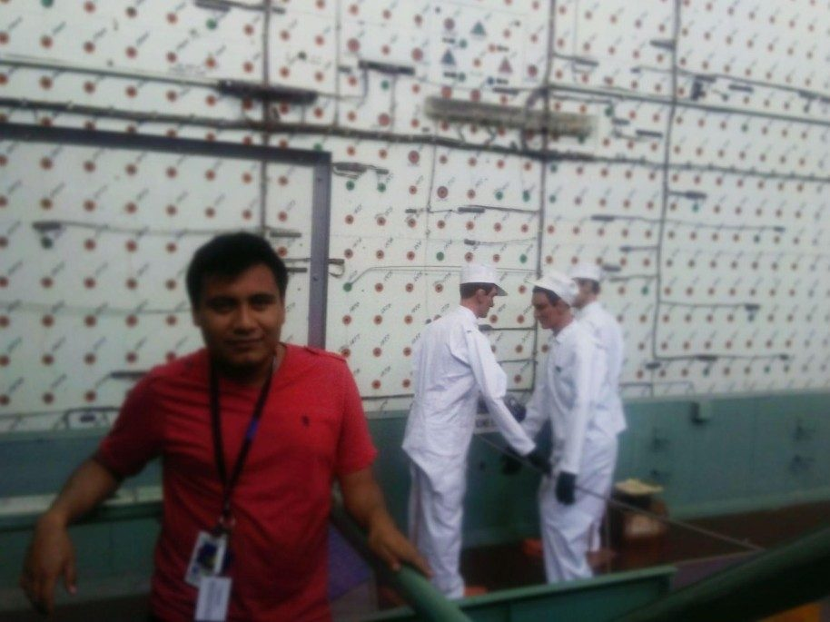
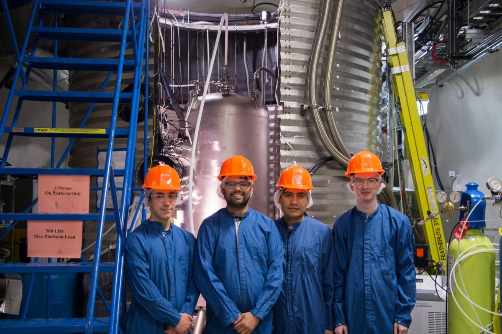
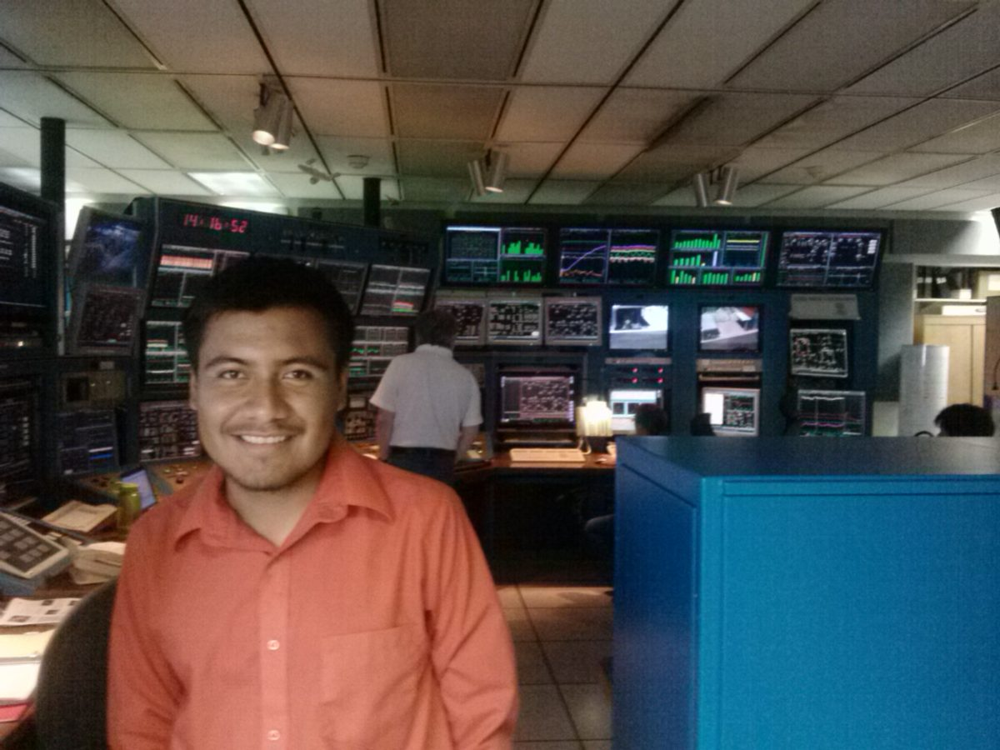
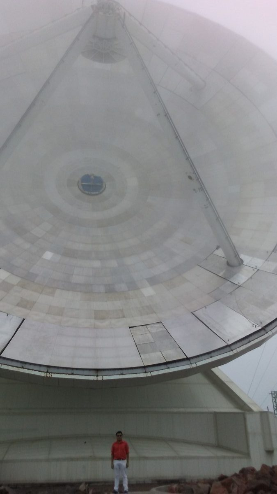
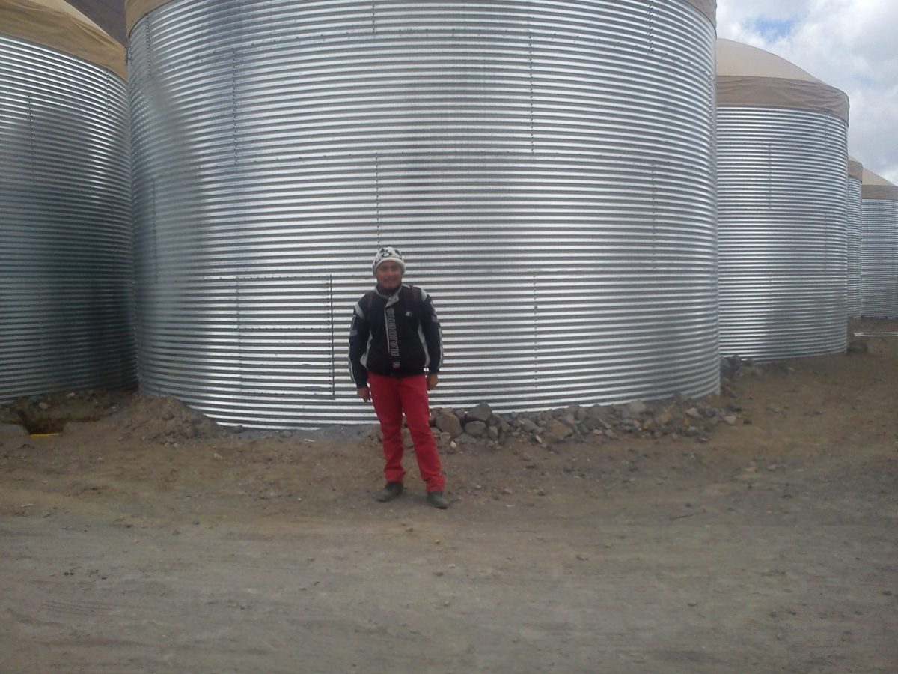
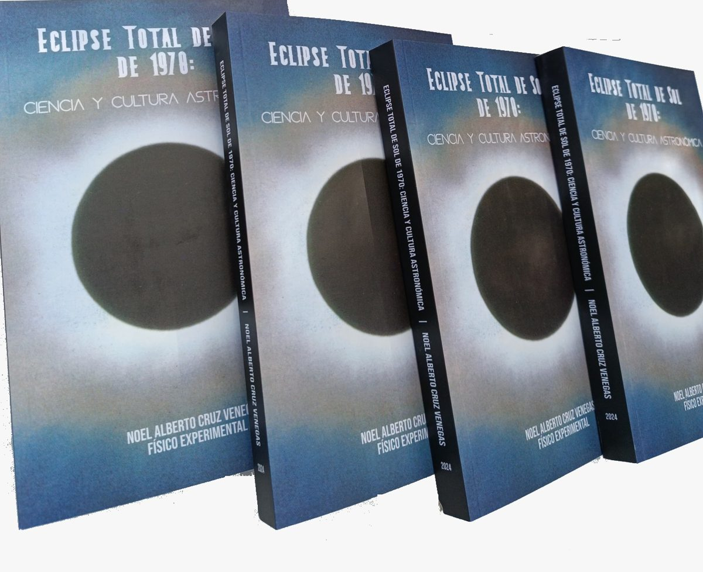
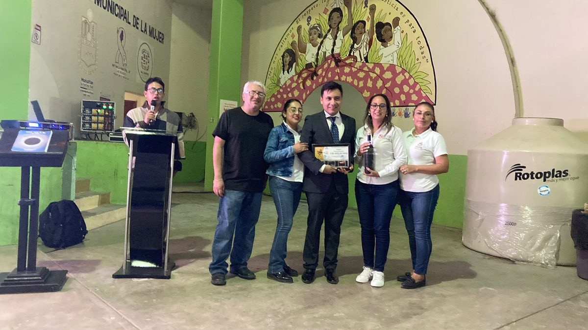
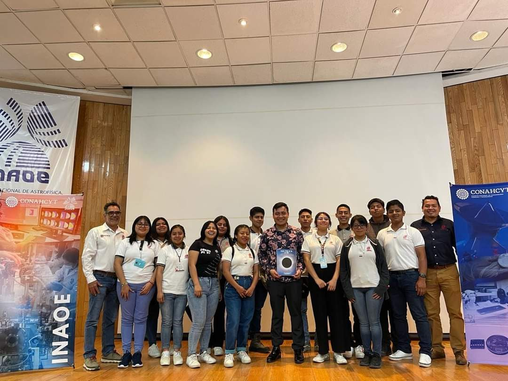
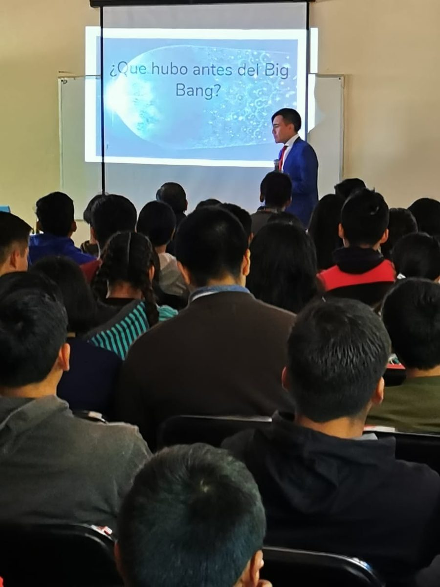

Without forgetting his hometown
Miahuatlán's Scientist Transcends
On track to become one of the youngest Mexican nuclear physicists with the greatest international recognition
Originally from Monjas, a municipality ten kilometers from Miahuatlán de Porfirio Díaz, Noel Alberto Cruz Venegas is on track to become one of the youngest Mexican nuclear physicists with the greatest international recognition, thanks to his academic work at world-renowned institutions.
But he is also known for his decision to share with his hometown the knowledge he has gained, through the commissioning of a solar observatory in Miahuatlán de Porfirio Díaz, Oaxaca, Mexico. It is the first of its kind in southern Mexico. The observatory is capable of detecting solar eclipses, such as the one on March 7, 1970, and the one taking place tomorrow, considered the "Great Mexican Solar Eclipse of 2024."
The 1970 solar eclipse made Miahuatlán de Porfirio Díaz known as the "Scientific Capital of the World," given the concentration of hundreds of scientists who considered it the best place along the path of totality to observe the phenomenon. That event was the main influence that led Noel Alberto Cruz Venegas to pursue studies in physics.
"I was born to a family of farmers. I attended the Cuauhtémoc Primary School. There, I met Professor Zósimo Aquino Bustamente, who taught me to read and write and was always very attentive to my education. Since then, the idea of becoming a scientist was always present. That idea was reinforced by a local water fountain built to honor the scientists of the eclipse, with statues looking at the sky. When I asked my parents and grandmother (may she rest in peace) who the statues were, they said: 'Scientists from overseas.' And so, 'I grew up with that motivation.'"
After finishing elementary school, he moved to Miahuatlán de Porfirio Díaz to complete his secondary and high school education, where his interest in becoming a scientist grew, first in Mexico and later abroad with the help of scholarships.
From Mexico to Oak Ridge and SNOLAB
"In 2012, I began my bachelor's studies in physics at the Faculty of Sciences of the UNAM. Four years later, I was awarded a summer research internship sponsored by the Nuclear Physics Division of the Mexican Physical Society.

"The stay took place at the Physics Division of the Oak Ridge National Laboratory, headquarters site of the Manhattan Project that produced the world's first atomic weapons. Afterward, I worked as a research assistant at the SNOLAB underground laboratory in Ontario, Canada. There I collaborated with scientists who helped win the 2015 Nobel Prize in Physics, Arthur McDonald," he says.

In 2018 he completed a Master of Science at the University of Alberta as a High Qualified Skilled Personnel of the McDonald Institute. He later began graduate studies at the University of Manitoba with an IGSES scholarship.

"My studies at the University of Manitoba began in 2022 within the MOLLER experiment. There, we investigate whether the electron has structure, as well as the discovery of new forces and exotic matter, by colliding electrons with electrons," he adds.


A Solar Observatory for Southern Mexico
While completing his studies, he founded the Miahuatlán Solar Observatory, the first solar physics laboratory in southern Mexico. Funding came from the local government and High School COBAO 27, which made it possible to install two radio telescopes for solar eclipse studies.
"I established the observatory in partnership with NASA's Radio JOVE Project and the Stanford Solar Center's superSID space weather monitoring program. All the equipment was bought in the United States."
On October 14, 2023, a sudden ionospheric disturbance (SID) produced by the solar eclipse was detected at the facility. On December 14, 2023, a strong solar flare was observed by the observatory, confirming the detection by NASA's Solar Dynamics Observatory.
The Miahuatlán Solar Observatory will also play an important role in research on the solar eclipse taking place today.
"The data we are going to collect is of interest to several radio telescopes in the United States in the same category as ours. To study these astronomical phenomena, several observation sites are needed to study the spatial and temporal effects of solar eclipses on the upper atmosphere."
Overall, the Miahuatlán Solar Observatory will become a gateway to scientific knowledge for hundreds of students in the area.
The Eclipses of 1970 and 2024
"The April 8, 2024 solar eclipse was announced just after the March 7, 1970 solar eclipse. These two eclipses belong to the same family (Saros cycle), in terms of the relative position of the Earth, the Moon, and the Sun, but differ by a displacement toward the Northern Hemisphere."
"The organization Astronomers Without Borders donated three thousand solar eclipse glasses to me. What they do is recycle glasses from past solar eclipses in the United States and other developed countries," he recounts.
"With this in mind, I took the lead in preparing my hometown to observe the 2024 solar eclipse safely. I knew I had to make plans in advance to acquire solar eclipse glasses before they became scarce."
Author of the 1970 Solar Eclipse Book
Beyond nuclear physics, Noel Alberto has also become an expert in solar physics, a field he studies with real passion. That is why he wrote the book The 1970 Total Solar Eclipse: Science and Astronomical Culture, which explains what happened on March 7, 1970.

"I have always been interested in education. So I set myself the task of investigating, and that is how the book came about. The idea was to provide a complete and integrated view of the solar eclipse phenomenon."
In the book, he compiles articles and photographs from research institutions in North America and Europe. He explains each photograph in detail to help the interested reader (mainly those from Miahuatlán and the state of Oaxaca) understand the physics, history, and anthropology behind the 1970 solar eclipse, and to answer, in a broad and detailed way, the question: What happened on March 7, 1970?


Sharing Science at Home
He shares his knowledge to promote interest in pursuing STEM careers, bringing talks and workshops to students in his region.
